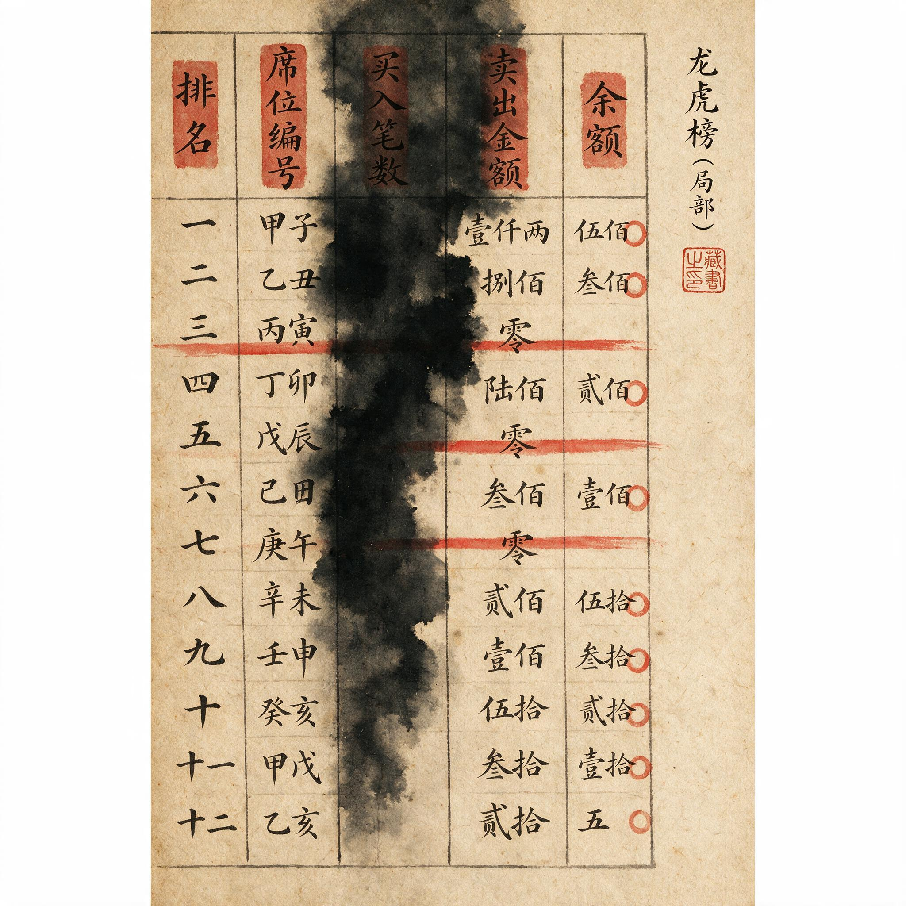

第 24 章
反例的沉默叙事
一个交易者打开他的复盘笔记，翻到2023年2月13日那一页。这一天，他买入了AI概念龙头，仓位三成，理由是“弱转强确认”。分时图上，该股早盘低开三个点，随后在十五分钟内翻红，十点前封死涨停。次日高开七个点，他在板上加仓。第三日继续涨停。第四日冲高回落时清仓，单笔盈利十四个点。他在笔记中写道：“弱转强模式再次验证。分歧日低开是买点，转一致后果断加仓。”
同一本笔记，翻到2023年3月8日。他买入了另一只AI概念股，理由同样是“弱转强确认”。分时图的形态几乎可以与前一笔交易重叠：早盘低开四个点，二十分钟内翻红，十点半前封板。次日，该股平开，随即跳水，午后封死跌停。第三日，跌停开盘，他在集合竞价割肉，单笔亏损十八个点。这笔交易，他没有记在笔记里。当被问及这只股票时，他愣了一下，说：“那笔不算，那是被市场情绪带崩的，属于系统性风险。”
这不是一个人。这是一个市场的集体记忆机制。前五章，我们拆解了卡位的绞杀链、补涨的逻辑陷阱、辨识度的自噬、席位信号的周期依赖，以及一轮完整周期中三个席位的盈亏轨迹。每一章都建立在具体案例之上——Alpha与Delta的卡位战，补涨标的的流动性陷阱，知名席位的信号衰减，以及那三个在分歧期买入、在退潮期离场的资金，它们截然不同的结局。这些案例，每一个都是真实的。它们被选中，是因为它们清晰地展示了我们想要论证的规律：周期位置决定策略有效性，辨识度信仰会自噬，席位信号的有效性服从于市场环境而非席位本身。
但选中的过程，本身就是排除的过程。每一个被写入前五章的案例，都对应着至少三个被排除的案例。
那些被排除的案例，不是因为它们虚假——它们同样真实，同样有完整的分时图、龙虎榜数据、论坛讨论帖和账户盈亏记录。它们被排除，是因为在复盘者的叙事框架中，它们被视为“噪音”“假突破”“非龙头”或“系统性风险”。
如果那些被排除的案例，被重新纳入分析框架，前五章建立的认知图景会发生什么变化？回答这个问题，不是要推翻前五章。前五章的规律是真实的，但它们的真实性建立在特定的边界内——这个边界就是“我们只观察了那些被选中的样本”。而画边界的方式，不是引入新的案例，而是让那些沉默的案例开口说话。---
2023年7月17日，某AI概念股A早盘低开2.8%，随后在四十分钟内翻红，十点十五分封板。龙虎榜显示，两家知名游资席位合计买入一点二亿，卖方力量分散，机构席位净卖出仅三千万。
这个分时图，在当天收盘后被截图，出现在至少七个复盘帖中。帖子标题包括：“教科书级弱转强”“龙头分歧转一致的最佳买点”“这个分时，我打九十分”。
次日，A股竞价涨停，盘中开板回封，收盘封单四点二亿。第三日，一字板。第五日冲高回落。从启动到最高点，累计涨幅47%。
这笔交易，成为那一轮AI行情的经典案例。参与该股的游资席位，被冠以“分歧猎手”的称号。论坛上，至少有二十篇帖子详细拆解了这波操作：为什么低开是分歧信号，为什么翻红是确认，为什么封板是买点，为什么次日竞价是加仓点。这些分析，逻辑严密，证据充分，回测数据支持。它们构成了一个完整的知识体系：弱转强，是一种可被识别、可被复制的交易模式。
然而，这种模式的叙事构建，与古代房中术《素女经》中“龙翻”式的描述逻辑惊人相似——后者强调“疏緩動搖”与“八浅二深”的韵律感，认为通过特定的节奏与深度配合，可以“活絡腰骨，帶動可活絡腦脊”，达到养生甚至治病的效果。两者都试图将复杂的、概率性的互动过程，提炼为一套可复制、可传授的“正确”方法论。现在，我们看同一时期的另一只股票。
2023年7月17日，某AI概念股B早盘低开3.1%，随后在三十五分钟内翻红，十点零八分封板。龙虎榜显示，同一家知名游资席位买入六千八百万，卖方力量分散。分时图形态，与A股高度相似——低开幅度相近，翻红速度相近，封板时间相近，甚至连封板后的抛压形态都相近。如果遮住股票代码和日期，让一个交易者分辨这两张分时图，他能分辨出来的概率，不会超过随机水平。
但B股的结局截然不同。次日，B股平开，随即在开盘十五分钟内放量跳水，午盘前封死跌停。龙虎榜显示，前一日买入的游资席位在当天割肉离场，卖出六千二百万，亏损约9%。第三日，B股继续跌停。随后五个交易日，累计跌幅超过31%。
这笔交易，没有任何复盘帖讨论。同一个席位，在同一个交易日，使用同一套模式，买入两只形态高度相似的股票。一只赚了47%。一只亏了9%。
但在龙头战法的知识体系中，47%的盈利被反复研究、拆解、提炼、传播，成为“弱转强模式”的经典案例。
而9%的亏损，被归类为“噪音”——它不被记录，不被讨论，不被纳入任何复盘框架。为什么？最常见的解释是：B股不是龙头，它只是跟风股。跟风股在分歧日的弱转强，是假突破，不具备参与价值。这个解释，在逻辑上成立。
但它引入了一个新的问题：如何事前区分龙头股和跟风股？在A股启动之前，它并非市场公认的龙头。彼时，AI板块已有至少三只股票涨幅超过30%，A股只是其中一只。它的“龙头”身份，是在它完成47%的涨幅之后，由市场赋予的——而不是在它启动之前就已经存在的客观事实。交易者在7月17日买入A股时，他并不知道这只股票会是龙头。他买入的理由，是“弱转强”这个分时形态，而不是“这只股票已经是龙头”这个事后判断。
但在复盘时，“弱转强”这个模式被归因于“龙头股的弱转强”，而B股的失败被归因于“跟风股的弱转强”——两者在模式描述上完全相同，在事前分辨上缺乏可操作的标准，在结果上却截然对立。这就像试图用“龍翻”式的“八浅二深”去保证生育成功，却忽略了“目前沒有充分研究证明有哪一种特定的身体位姿特别有明显非常高的生育率”这一基本事实。这不是技术分析的问题。这是叙事框架的问题。
叙事框架决定了哪些数据被纳入分析，哪些被排除。在A股的案例中，成功被归因于模式本身的有效性；在B股的案例中，失败被归因于标的的选择错误。但标的的选择，在事前无法被模式本身所区分——这构成了一个逻辑闭环：成功证明模式有效，失败证明标的选错，而标的选错的判断标准，恰恰是失败本身。这个闭环，在龙头战法的知识传承中反复出现。被选中的样本，永远是那些符合预期结果的样本；不符合预期的样本，被以“标的选错”“时机不对”“市场环境异常”等理由排除在外。排除之后，剩下的样本，当然会完美地验证预期结果。这不是规律。这是幸存者偏差。---
2023年8月24日，某券商上海分公司席位——我们称其为P席位——在AI概念股C上买入一点三亿，占据当日买一位置。该股当天涨停，随后三天内出现两个涨停，P席位在第四天卖出，盈利约23%。这笔交易，被P席位的追随者奉为经典。该席位的龙虎榜记录被整理成表格，在多个付费社群中传播。表格显示，P席位在2023年参与了十四只AI概念股，其中九只盈利，成功率64%，平均单笔盈利18%。这个数据，支撑了一个信仰：P席位具有市场洞察力，跟踪它的买入信号，可以获得超额收益。
但表格中缺失了一个信息。P席位在2023年总共参与了三十七只股票，其中十四只是AI概念股。另外二十三只股票，平均单笔亏损11%，其中七只亏损超过20%。这二十三只股票，从未出现在任何复盘表格中。它们的存在，只能通过逐日翻阅龙虎榜数据来发现——而几乎没有人会这么做。
因为当你已经相信P席位的成功率是64%时，你不会去质疑数据本身的完整性。
你只会默认，表格中的十四只股票，就是P席位的全部交易。但即使在这十四只AI概念股中，叙事也经过了筛选。2023年8月24日，P席位在买入C股的同时，还买入了AI概念股D，金额四千二百万。D股当天同样涨停，但次日冲高回落，P席位在第三天割肉，亏损约8%。这笔交易，没有被纳入任何表格。为什么？因为D股不是那个周期的“龙头”。它只是跟风股。在事后复盘时，P席位在D股上的亏损被解释为“试探性仓位”或“套利操作”，而C股上的盈利被解释为“主攻仓位”或“核心判断”。
但龙虎榜数据不提供仓位的“性质”。它只提供买卖金额、席位名称和日期。在P席位真实的交易记录中，8月24日，它在C股和D股上的买入金额是一点三亿和四千二百万——这个比例，如果说是“试探”与“主攻”的区别，那是一种事后的叙事建构。事实更可能是：P席位在当天判断AI板块有整体性机会，于是在多只股票上分散买入。其中C股因为流通盘更小、封板更快、次日溢价更高，成为了“龙头”；

D股因为流通盘更大、次日抛压更重，成为了“跟风”。这个结果，在P席位的交易框架内，是概率性的。但在复盘叙事中，它被转化为了确定性的判断——“P席位精准识别了龙头，重仓出击，大获全胜”。
这不是欺骗。这是叙事的经济性。人类的认知系统，天然倾向于用简单的因果故事来解释复杂事件。一个“精准识别—重仓出击—大获全胜”的故事，比一个“分散买入、概率分布、结果分化”的统计描述，更容易被记住、被传播、被奉为经验。
但当这种叙事经济性被应用于交易知识的生产时，它会产生一个后果：被传播的，永远是那些符合叙事结构的案例；被遗忘的，永远是那些不符合的案例。而遗忘的规模，远远超过传播的规模。
以P席位为例。在公开的龙虎榜数据中，它在2023年总共出现了一百三十七次。但被纳入各类复盘表格、讨论帖、付费文档中的交易，不超过二十次。剩下超过一百一十次交易——包括大量亏损、大量微利、大量平庸操作——从未进入任何公共叙事。
当一个交易者“学习P席位的模式”时，他学习的不是P席位的全部交易记录，而是被筛选过的二十次成功交易。这二十次交易中提取出的模式，如果应用于那一百一十次未被筛选的交易，其成功率会急剧下降。这不是模式的问题。这是样本的问题。---
2023年9月，某知名股票论坛出现了一篇帖子，标题是《情绪周期第三阶段：龙头分歧转一致的量化识别》。发帖人详细记录了自己在9月4日至9月15日期间，对三只龙头股的操作：买入点、加仓点、卖出点，以及每一笔操作对应的情绪周期阶段判断。帖子附有大量分时图截图、龙虎榜数据、资金流向图，论证严密，逻辑清晰。最终，这三笔操作合计盈利37%。
帖子迅速被加精、置顶。回复超过三百条，其中多数是“学习了”“干货满满”“这才是真正的龙头战法”。发帖人随后开通了付费专栏，定价每月一百九十九元，首月订阅超过两千人。
但论坛的搜索功能，可以揭示一个被忽略的事实。同一个发帖人，在9月4日至9月15日期间，还发表了另外四篇帖子。第一篇，发布于9月5日，讨论一只“潜在龙头”的分歧买点。该帖被删除，但缓存显示，该股在发帖当天跌停，次日继续跌停。第二篇，发布于9月7日，讨论“补涨龙头的黄金坑”。该帖同样被删除。缓存显示，该股在一周内跌幅超过22%。
第三篇，发布于9月11日，标题是《今天吃面，反思一下》。发帖人坦承自己在某只股票上亏损了十五个点，原因是“情绪判断失误”。该帖在发布后四十八小时内被发帖人自行删除。回复仅有七条，内容多为“加油”“正常回撤”“下次注意”。
第四篇，发布于9月13日，讨论“龙头第二波的确定性”。该帖被移动至水区，无人回复，自然沉底。这四篇帖子，代表了发帖人在同一时期内的四笔亏损操作。它们从未出现在发帖人的付费专栏中，从未被引用为“经典案例”，从未被纳入任何复盘框架。那三笔盈利操作，合计37%。如果加上这四笔亏损操作，总账是亏损约8%。
但发帖人没有刻意隐瞒。他只是在亏损后删除了帖子，或者将帖子沉底。这是论坛机制的默认行为：亏损帖无人回复，自然下沉；盈利帖被反复顶起，持续置顶。论坛的算法，进一步放大了这种不对称——热门帖子会获得更多曝光，冷门帖子会获得更少曝光。而热门的定义，是点赞、回复、分享，这些数据天然倾向于成功叙事。
一个交易者浏览这个论坛时，他看到的不是完整的交易记录，而是被算法和用户行为共同筛选过的叙事集合。在首页置顶的，永远是那些“我赚钱了，这是我的方法”的帖子；在末页沉底的，永远是那些“我亏钱了，我需要反思”的帖子。
这导致了一个结构性的认知扭曲：交易者会高估成功案例的比例，低估失败案例的比例。他看到的“龙头战法”，是一种成功率极高、回撤极小的交易体系——因为所有证明其失败的证据，都已经被系统地排除在视野之外。
但这不是论坛的错。这是人性的错。人类天生倾向于展示成功，隐藏失败。在交易这个领域，这种倾向被放大了——因为交易的结果直接关联到自尊、财富和社会评价。一个亏损的交易者，不仅损失了金钱，还面临着自我怀疑和他人质疑。在这种压力下，删除亏损帖、沉底失败记录，是一种近乎本能的反应。
当这种个体防御机制在集体层面叠加时，它产生了一个市场级的认知偏差：龙头战法的公共叙事，本质上是成千上万个交易者自我审查后留下的残片。这些残片，经过论坛算法的放大、复盘帖的筛选、付费内容的包装，最终形成了一套看似严密、实则在统计基础上严重偏倚的知识体系。---
现在，我们需要做一个思想实验。假设有一个交易者，在2023年严格按照龙头战法的核心原则进行操作：只在分歧日买入，只在确认转一致后加仓，只在退潮信号出现时卖出。他选股的目标，是板块中辨识度最高、连板数最多、成交额最大的标的。他全年操作了四十七只股票。其中，十一只股票的涨幅超过30%，七只超过50%，三只翻倍。
这十一只股票，构成了他的“经典案例”。每一笔操作，都可以被拆解为“分歧转一致”“弱转强确认”“龙头首阴反包”等模式。这些模式，在事后看，完美地解释了盈利的来源。
但另外三十六只股票，亏损幅度从7%到33%不等。其中，有十四只股票的分时图形态，与盈利案例高度相似——同样的分歧日低开，同样的翻红确认，同样的封板加仓。唯一的区别是，它们在次日没有继续上涨，而是直接跳水。这十四只股票，被交易者归因为“假突破”“跟风股”“市场情绪退潮”等外部因素。
在复盘时，他认为这些亏损与模式本身无关，而是自己的“选股”或“择时”出现了偏差。这种归因方式，与将性交体位的效果差异完全归因于“配合技巧”或“个体差异”，而回避体位本身固有的、概率性的局限，如出一辙。
但当他审视自己的选股标准时，发现了一个循环：盈利的股票，在事后被定义为“真龙头”；亏损的股票，在事后被定义为“假龙头”。而“真龙头”和“假龙头”的区分标准，恰恰是盈利与否。这个循环，意味着他的选股框架不具备事前可操作性。
在买入的那一刻，他无法用任何客观指标区分“真龙头”和“假龙头”——他只能依赖分时图形态、盘口力度、资金流向等信号，而这些信号，在盈利案例和亏损案例中，没有系统性差异。换句话说，他的成功，在统计上无法与他所信奉的模式建立因果关系。
这不是否认他的盈利。盈利是真实的。但盈利的来源，可能是他恰好押中了概率分布中的正面样本，而不是他掌握了一套可以持续产生正面样本的规律。
这个区别，是致命的。一个交易体系，如果它的成功无法被归因于可复制的规律，那么它的长期期望值就是零——或者，在考虑了交易成本、滑点和情绪损耗后，是负值。龙头战法的知识传承，恰恰在这种归因上出现了系统性的偏差：它用成功案例来定义规律，用失败案例来定义例外。
而当例外被排除后，规律在统计上自然是完美的——但这种完美，是一种叙事上的完美，而不是概率上的完美。---
这里，我们需要回应一个最强有力的反方解释。反方认为：龙头战法亏损的主因，是执行纪律不严与资金管理失控。情绪周期只是事后归因的叙事装置。任何策略，只要严格执行，都能盈利。
这个解释，有它的合理性。纪律执行和资金管理，确实是交易盈利的必要条件。
但用它来解释龙头战法的广泛亏损，混淆了两个层次的问题。第一个层次：如果一个交易者严格执行了龙头战法，包括它的选股标准、买点确认、仓位管理和止损纪律，他能否在长期获得正期望收益？答案是：取决于他所使用的“龙头战法”版本，是完整的真实交易记录版本，还是被筛选过的成功案例版本。
如果是一个真实交易者，在2023年执行了一套固定的龙头战法规则，他的全年交易记录会显示：成功率大约在35%到45%之间，盈亏比大约在一点五比一到二比一之间，最大回撤可能在30%以上，年化收益率取决于市场环境——在AI行情这样的强趋势市中，可能是正的；在震荡市或熊市中，可能是负的。
这个统计画像，与论坛上呈现的“胜率六成、月均二十个点、回撤可控”的龙头战法形象，相去甚远。
如果这个真实交易者只展示他的成功案例，并删除失败案例，他也能够呈现出“胜率六成、月均二十个点”的叙事。而这，恰恰是论坛上绝大多数“龙头战法大神”所做的事情。
第二个层次：纪律执行本身，是否能够独立于认知框架而存在？反方解释隐含了一个假设：交易者可以清晰地知道“什么是纪律”，然后只需要克服人性弱点去执行它。但龙头战法的纪律，是建立在“龙头”这个概念的识别之上的。如果一个交易者无法在事前区分“真龙头”和“假龙头”，那么他的纪律——无论是止损纪律还是仓位纪律——执行的依据就是模糊的。
当他买入一只股票，它次日跌停，他应该止损——这是纪律。但他如何知道，这只股票是“假龙头假突破，应该止损”，还是“真龙头二波回调，应该加仓”？这个判断，在事前不存在确定性的答案。它只存在于事后：如果股票反弹了，它就是“真龙头二波回调”；
如果股票继续跌，它就是“假龙头假突破”。这意味着，纪律的执行，不是独立于认知框架的。它依赖认知框架来提供“什么是该止损的情况”和“什么是该扛过去的情况”的区分。而如果认知框架本身就是不对称的——只包含了成功案例的叙事，排除了失败案例的教训——那么纪律的执行，就可能在错误的方向上被强化。交易者在亏损时，会告诉自己“这是真龙头，我应该扛过去，这是纪律”。在盈利时，他会告诉自己“这是真龙头，我应该加仓，这是纪律”。在两种情况下，他都认为自己在执行纪律——但结果，南辕北辙。这不是纪律的问题。这是认知框架的问题。---
龙头战法，作为一个情绪流派，它的知识生产机制，受到选择性叙事的结构性约束。这种约束，体现在四个层面。
第一，个体层面。交易者天然倾向于记住成功，遗忘失败。这不是道德缺陷，而是认知心理学反复验证的规律——自利归因偏差和确认偏误，使得人类倾向于将成功归因于自身能力，将失败归因于外部环境。
第二，社区层面。论坛算法、社交传播和付费筛选，共同制造了一个“成功案例放大镜”。在这个放大镜下，每一个成功的交易都被反复拆解、传播、变现；每一个失败的交易都被删除、沉底、遗忘。交易者浸泡在这个信息环境中，他的认知基准，会不可抗拒地偏离统计现实。
第三，知识传承层面。龙头战法的教学，几乎全部基于成功案例。一个典型的教学帖，会展示“某龙头在分歧日低开，我在这个位置买入，次日涨停，第三天涨停，第四天卖出，盈利三十个点”——然后分析买点的信号、卖点的判断、情绪周期的阶段。它不会展示，在同一时期，同一个交易者用同一个方法，在另外五只股票上亏损了二十个点。
这种教学方式，在短期内是高效的——它让学生快速理解“什么是对的”。但在长期，它是致命的——它让学生永远无法理解“什么情况下对会变成错”。
第四，制度层面。A股市场的短线生态，本身的制度设计就鼓励了幸存者叙事。涨停板制度、龙虎榜披露规则、游资席位的公众关注度，这些制度元素共同制造了一个“明星交易者”的聚光灯。在这个聚光灯下，少数成功案例被放大为神迹，大量失败案例被掩盖在阴影中。
这四个层面的叠加，使得龙头战法的知识体系，在底层上是不对称的。它不是虚假的。它建立在真实案例之上。但这些案例，是从一个更大的、包含大量失败样本的真实数据集中，被精心挑选出来的。它的规律是真实的——在它所挑选的样本边界内。但它的边界，从未被明确标示。
每一个被验证的规律，都对应着一个被遗忘的反例。反例的存在，不是规律的例外，而是规律的组成部分。因为规律如果要具有可操作性，它必须能够说明：在什么条件下，规律成立；在什么条件下，规律不成立。
而龙头战法的知识传承，恰恰在这一点上失语了。它无法告诉你，为什么同样一个“弱转强”分时图，在A股上能赚47%，在B股上会亏9%。它只能告诉你，A股是龙头，B股是跟风。但它无法在你买入之前，告诉你哪一只是龙头，哪一只是跟风。它只能在你亏钱之后，告诉你：你买错了。这不是知识。这是事后解释。就像讨论“龍翻”式时，研究认为其“能活絡腰骨，帶動可活絡腦脊”，但若男方“小腹过大压迫女方或行使不夠輕巧，很容易造成女方反感甚至拒絕持续性事过程”。成功与失败的原因，被归结为执行者的“技巧”或“体质”，而非方法本身在复杂现实中的概率分布。
现在，我们可以回答本书的核心问题了：为什么无数人学龙头战法却反复亏钱？
答案，不在技术层面，而在认知层面。亏损的根源，不是“技术执行失误”——虽然执行失误大量存在。亏损的根源，是“认知框架的不对称”。
交易者学习龙头战法时，他学习的是一个被系统性筛选过的知识体系。这个体系中的每一条规律，都对应着至少三个被遗忘的反例。但这些反例，从未出现在他的学习材料中。因此，他建立起的认知框架，天然地高估了规律的有效性，低估了风险的概率。
当他进入实盘，遭遇那些“不在教材里”的失败案例时，他无法将其纳入自己的认知框架。他只能将其归因为“自己的技术还不够”“纪律执行还不严”“市场情绪判断失误”——这些归因，都是个体层面的，它阻止了交易者去质疑认知框架本身的问题。
他以为自己在学习一套“客观规律”，实际上在学习一套“被筛选过的叙事”。他以为自己在执行“交易纪律”，实际上在执行“对叙事框架的服从”。
他以为自己在搏杀“情绪周期”，实际上在搏杀“自己被植入的认知偏差”。这不是他一个人的困境。这是整个情绪流派的困境。
龙头战法的知识传承，本质上是一种基于幸存者叙事的知识生产。每一次“经典案例”的复盘，都是对失败案例的系统性排除。而这种排除机制本身，构成了亏损持续发生的结构性原因——因为每一代新的学习者，都在用同样的方式，重复同样的选择性吸收，最终抵达同样的亏损结局。
这不是阴谋。没有任何一个“龙头战法大神”在刻意欺骗。他们中的大多数人，真诚地相信自己的成功源于对规律的掌握。他们只是在分享自己的成功案例时，无意识地过滤掉了那些不符合叙事框架的失败案例。但这种无意识的过滤，在集体层面，经过论坛算法、社交传播、付费筛选的放大，最终形成了一套在统计上严重偏倚的知识体系。
这套体系，在牛市中看起来有效——因为牛市本身会提供大量正面样本，掩盖失败案例。但在震荡市中，它的缺陷会暴露：交易者频繁遭遇“假突破”，频繁止损，账户净值缓慢而不可逆转地下降。
他们不知道问题出在哪里。他们以为是自己学得不够好，于是更加努力地学习更多成功案例，更加严格地执行“纪律”——实际上，是在更加彻底地执行一个不对称的认知框架。这，才是亏损的根源。---
本章的论断，不是“龙头战法无效”。这一点，必须明确。龙头战法，作为一种交易策略，在特定的市场环境、特定的情绪周期阶段、特定的选股范围内，是有效的。前五章已经展示了这种有效性——在分歧期买入，在一致期持有，在退潮期卖出，是可以在统计上获得正期望收益的。
边界一：龙头战法的有效性，高度依赖于市场环境。在强趋势市中，龙头股存在连续的溢价机会，策略的期望值为正；在震荡市或熊市中，龙头股的溢价空间被压缩，假突破的概率上升，策略的期望值可能为负。
边界二：龙头战法的成功案例，在统计上被系统性高估。任何基于公开论坛、复盘帖、付费内容学习龙头战法的交易者，他所接触到的成功案例比例，远高于真实交易中的成功案例比例。这导致他对策略的期望值产生系统性高估。
边界三：龙头战法的核心概念——“龙头”——在事前不具备可操作性。交易者只能在事后识别龙头，而事后识别无法指导事前决策。这导致策略的执行，高度依赖交易者的主观判断，而主观判断容易受到认知偏差的影响。
边界四：龙头战法的知识传承，缺乏对失败案例的系统性分析。这使得学习者无法建立对策略风险的完整认知，无法在事前区分“高概率的龙头机会”和“低概率的假突破陷阱”。承认这些边界，不意味着放弃龙头战法。它意味着，将龙头战法从“不败神话”还原为“概率游戏”——一套在特定条件下有正期望收益、在特定条件下有负期望收益的交易策略。这个还原，是纪律的前提。---
一个交易者，在2023年12月31日，翻开他的年度交易记录。他全年操作了七十一只股票，盈利三十九只，亏损三十二只。总账微盈——扣除交易成本后，年化收益率约4%。
他回忆起年初时，他给自己的目标是翻倍。这个目标，建立在他对龙头战法的信仰之上——他相信，只要严格执行“分歧买入、一致卖出”的纪律，他可以在一年内实现翻倍收益。但他没有实现。
他翻看自己的盈利记录。那些赚了二十个点、三十个点的交易，每一笔都符合龙头战法的经典模式：分歧日低开买入，转一致加仓，高潮期卖出。这些交易，他如数家珍，每一笔都能在论坛上找到类似的成功案例。
他翻看自己的亏损记录。那些亏了十个点、二十个点的交易，每一笔也都符合龙头战法的经典模式——至少，在买入的那一刻，他看到的信号与盈利案例中的信号别无二致。区别在于，它们没有涨停。或者涨停了，但次日直接闷杀。或者次日高开，但秒砸跌停。或者连板三天，但第四天一字跌停，利润全部回吐。这些亏损，他从未在论坛上看到过类似的案例。
论坛上，永远是那些“分歧日买入、次日涨停、连续涨停”的神帖。他忽然意识到，自己学习了两年的龙头战法，其实从未见过一套完整的、包含亏损案例的教学材料。他见到的所有“体系”，都是对成功案例的归纳——而归纳的对象，是已经被筛选过的样本。
他关上交易软件，打开一个空白文档。他决定写一份自己的交易记录。一份完整的记录，包含所有盈利和亏损，所有成功和失败，所有被市场验证的判断和被市场否定的判断。他决定，从那些沉默的反例开始写起。因为只有承认所有反例的叙事权重，纪律才有真正的立足之地。
这个决定，不会让他在下一年翻倍。但它会让他不再在同一块石头上反复绊倒。
那些被遗忘的反例，那些被删除的帖子，那些被沉底的亏损，那些从未出现在龙虎榜复盘表格中的交易——它们不是噪音。它们是他认知框架中缺失的另一半。补上这一半，框架才是完整的。而完整的框架，无法保证盈利。但它能保证，亏损时，你知道自己为什么亏损。这，已经是大多数人做不到的事了。